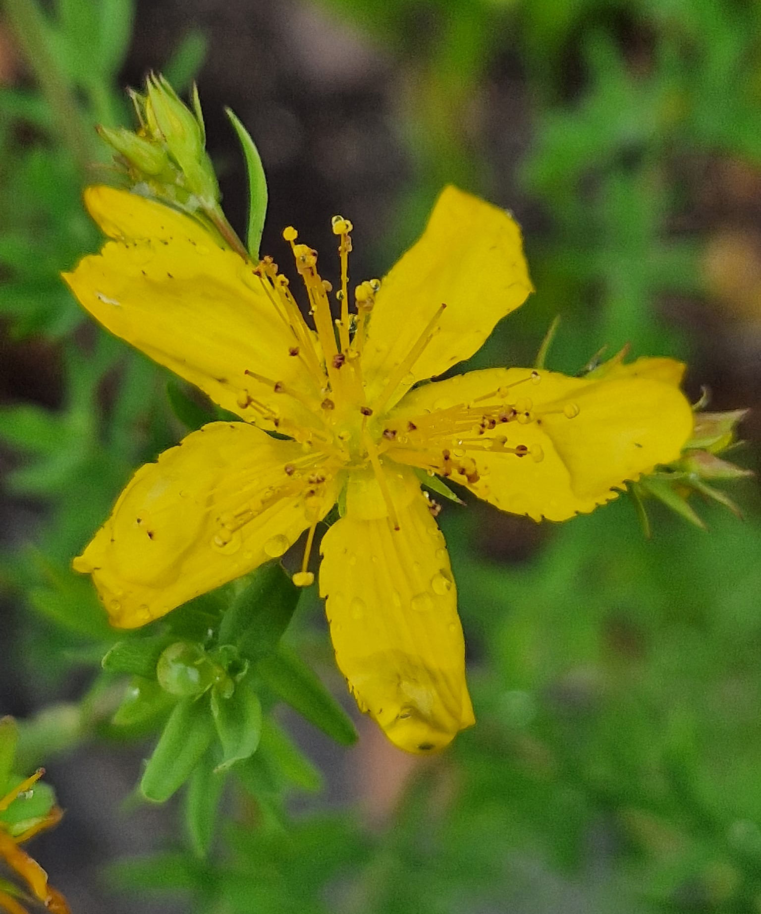

Curiosità
Hipericum perforato (Iperico, erba di San Giovanni, erba scacciadiavoli).
Pianta medicinale associata dalla tradizione popolare al martirio di S. Giovanni, poiche' fiorirebbe in corrispondenza della data di nascita del santo, il 24 giugno. Strofinando i petali tra le dita, appare un liquido rosso che ricorderete il sangue del suo martirio avvenuto in settembre e anche i forellini sulle foglie ricorderebbero la flagellazione.
In effetti, la fioritura dell'iperico inizia prima di quella data e procede in base al clima e alla zona geografica.
Claudio